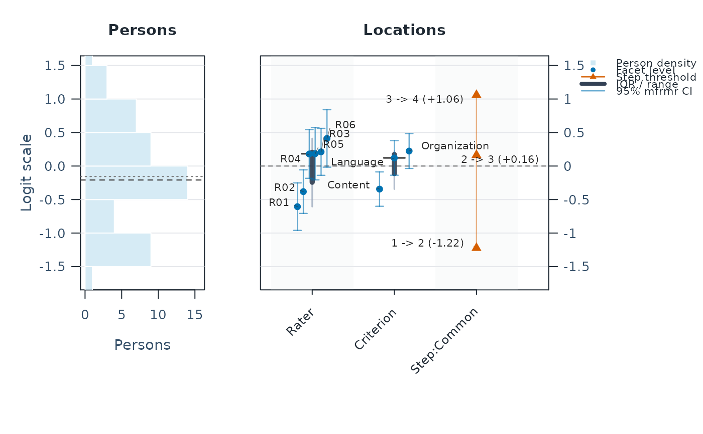
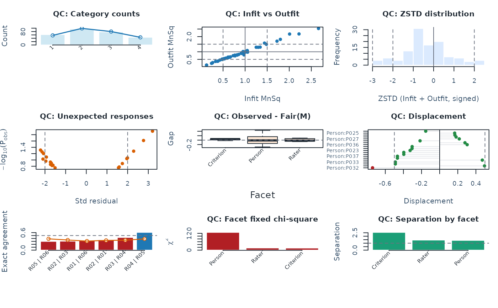
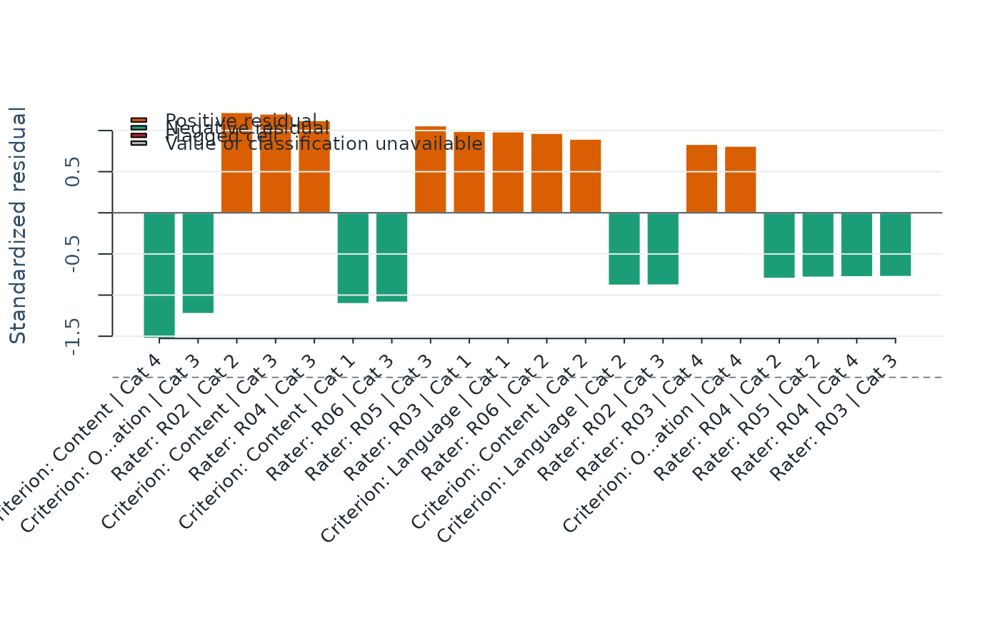

Quick guide to choosing the right base-R diagnostic plot in mfrmr.
Use this page when you know the analysis question but do not yet know
which plotting helper or plot() method to call.
If you are preparing figures for a report, start with
reporting_checklist() and inspect the "Visual Displays" rows first.
Those rows now map directly onto the public plotting family covered on this
page, so the checklist can act as a plot-readiness router rather than just a
manuscript checklist.
This guide is primarily written for diagnostics-based RSM / PCM
workflows. Ordinary one-family GPCM fits also use the residual-based diagnostics stack
through diagnose_mfrm(), plot(x, type = "unexpected"), plot(x, type = "displacement"),
plot(x, type = "agreement"), plot(x, type = "facets_chisq"),
plot(x, type = "residual_pca"), and plot(x, type = "qc"), plus the
posterior-scoring, design-weighted-information path via
compute_information() / plot(x), and the Wright /
pathway / CCC fit plots. Two GPCM-specific caveats apply when
interpreting these residual-based screens:
The free discrimination parameter means MnSq mean-square screens carry weaker invariance evidence than they do under
RSM/PCM. Treat MnSq flags fromGPCMas exploratory pointers to cells that merit closer inspection rather than as Rasch-style violations of strict invariance.FACETS-style fair averages are a Rasch-family measure-to-score transformation. Under
GPCMthe fair-average panel of plot(x, type = "qc") therefore renders with an explicit "unavailable" status, and the broader compatibility-export helpers stay outside the documentedGPCMboundary.
Use gpcm_capability_matrix() for the formal per-helper boundary
before choosing a GPCM follow-up plot route.
Two-family GPCM and corrected JML use their separate
mfrm_response_diagnostics() routes; the shared mfrm_fit class does not
authorize the ordinary diagnostics or Wright/Pathway displays above.
Portable fixed-calibration score batches have a separate review route.
Use summary(scores) and plot(scores) as described in
mfrm_calibration_score_methods. Those displays review returned scores;
they do not replace source-fit diagnostics or establish calibration fit.
Session plot defaults
Set options(mfrmr.plot_preset = "publication") to choose a session default
for plotting functions that expose the common preset argument. The
supported values are "standard", "publication", "compact" and
"monochrome". Precedence is an explicit call argument, then the session
option, then "standard". For example, preset = "standard" overrides
a session set to "monochrome". Explicit preset = NULL retains the
earlier package-default behavior; it does not read the session option.
Invalid session values cause an error only when that option is needed.
The category-curve, data-quality, fit-review, connectivity and network
routes of plot() for report bundles use the same option through ....
Plots without a common preset argument, including extended-model plots
with their own palette controls, keep their own settings. This option
selects a preset, not a universal theme or a guarantee that all renderers
implement every appearance control identically.
New plot payloads retain the resolved preset for supported saved-data
rendering. Converting an existing payload with as_ggplot() uses its saved
appearance, even after the session option changes. A call that creates a
new plot from a fit or statistical result uses the current default.
For a reproducible script, supply preset explicitly or set the option in
that script. Saving only the fitted model does not save a session option.
No global ggplot theme is changed.
Restore previous settings with old <- options(mfrmr.plot_preset = "monochrome") followed by options(old). Use
options(mfrmr.plot_preset = NULL) to remove the option. The preset changes
appearance, not estimates, confidence levels or diagnostic thresholds.
Titles and compatibility
The development version adds title to plot(x, type = "marginal_fit"),
plot(x, type = "marginal_pairwise"), plot(x, type = "unexpected"),
plot(x, type = "agreement"), plot(x, type = "facets_chisq"), plot(x, type = "bubble"),
plot(x, type = "bias") and plot(x, type = "facet_dashboard"). Omission
retains default title metadata; title = "Scoring patterns" replaces it;
title = NULL or title = "" suppresses that metadata. Titles and explanatory
notes are returned outside the figure by default; display controls below
govern explicit drawing. The dashboard's S3 plot()
method forwards these controls. Use exact argument names.
Legacy main remains supported without warnings, and main = NULL keeps
its original meaning: use the default heading. Supplying both main and
title is an error, even when they are equal or both NULL. Existing
positional calls retain their argument order. This is a compatible new
spelling, not removal or deprecation of main.
A title change does not alter the data, interval level, screening settings,
reference lines, subtitles or interpretation notes. In stored plot payloads,
an omitted heading is represented by an empty string. When hiding the
heading of a review-only dashboard, retain its limitations in the figure
caption or accompanying report. Use the plot guide to check ggplot support;
accepting title does not add a converter for an unsupported plot.
Fitted plots and saved intervals
For ordinary fitted-model plots, plot(fit, level = 0.90) is an alternative
to ci_level = 0.90; use only one spelling. The same control is forwarded
by ordinary fit-based routes of plot(res, ...) and as_ggplot(fit, ...).
It changes the normal intervals where show_ci = TRUE, without refitting
the model. The default remains 0.95. Specialist helpers that document
only ci_level retain that argument; this is not a package-wide rename.
A saved inferential result has already chosen its method and level. For
example, create ci <- mfrm_facet_intervals(fit, "Rater", level = 0.90)
before plot(ci); passing level to that plotting method is an error.
The attached route plot(res, type = "facet_raters") uses those saved
endpoints and does not inherit the Wright map's interval settings.
A saved plot payload also retains its rendering choices. With
p <- plot(fit, level = 0.90, show_title = FALSE, draw = FALSE),
as_ggplot(p) keeps that selection. To change it, make a new plot from
fit; extra settings such as as_ggplot(p, level = 0.80) are rejected.
To change labels on the converted ggplot, use
as_ggplot(p) + ggplot2::labs(title = NULL).
Figures omit titles, subtitles and explanatory footnotes by default.
Keep the returned object: p <- plot(fit), then use
plot_data(p, "title") and plot_data(p, "notes") to prepare the title
and notes separately in a manuscript. Printing a returned mfrm_plot_data
object also displays notes in the console. The same notes accessor works
for mfrmr ggplots and after saving and reloading the returned object.
Axis labels, legends, panel identifiers and data/status symbols remain.
title, main, subtitle and caption now supply metadata by default.
Entry points with show_title and show_notes allow explicit opt-in
display; both switches default to FALSE. For ggplot customization, use
ggplot2::labs(title = "..."). Numerical warnings and saved diagnostics
remain available regardless of these presentation choices.
Read score direction and diagnostic terms first
A logit is a model coordinate, not a label for good or bad performance. Record the wording of both ends of the rubric before interpreting a plot. In the ordinary positive-discrimination models, a higher Person location predicts higher coded scores, holding other effects fixed:
| Comprehensibility coding | Meaning of a higher Person location |
| 1 = difficult to understand; 4 = easy to understand | Easier to understand |
| 1 = easy to understand; 4 = difficult to understand | More difficult to understand |
For a default negatively oriented Rater facet, a higher Rater location
instead predicts lower coded scores. This is more severe under the
first rubric, but more favorable under the second. A facet declared in
positive_facets has the opposite parameter orientation. That argument
does not reverse the outcome categories or make a Person score mean
"better". Relabeling categories or flipping a graphical axis also does not
recode the fitted model. To reverse a numeric 1–4 rubric, recode as
5 - Score before fitting, retaining the original data and consistent
category meanings across criteria. Existing anchors must use the same
coding and scale; changing coding is not just editing a figure.
The fitted-model plotting notes state recorded facet directions without
guessing the rubric meaning. Use p <- plot(fit, type = "wright"),
print(p) and plot_data(p, "notes"); keep the rubric wording with the
analysis when saving it. The package does not infer that a column called
Comprehensibility measures ease rather than difficulty. An older saved
plot retains its original notes; regenerate the plot from its saved fit to
obtain new guidance. An imported model requires its source orientation.
Overfit and underfit. Infit and Outfit mean squares compare squared residuals with the variation expected under the selected model. Their reference is 1: smaller values describe less residual variation (overfit), larger values more variation (underfit). Infit weights observations by information; Outfit is more sensitive to unexpected responses far from the person's fitted location. ZSTD uses a different, zero-centered reference. Displayed bands are review limits, not universal acceptability rules, and a tiny deviation from 1 is not automatically flagged.
In a speech contest, trained judges can have similar severity estimates or high agreement while their fit is near 1. Those features alone do not imply overfit. If low mean squares occur, review actual residuals, category use, shared performances and whether judgments were made independently. Training is one contextual explanation to investigate, not a demonstrated cause or a reason to dismiss the result. Joint discussion/copying can introduce dependence; consistent independent application of a rubric is a different process. Overfit is not the machine-learning meaning of fitting too many parameters. Neither overfit nor underfit alone identifies halo, unfairness, judge incompetence or a rule for deleting ratings.
Bias in a bias plot. estimate_bias() estimates an additional shift
for a combination, such as Judge A scoring Content, after holding the
baseline Person/facet/step/slope estimates fixed. It concerns a conditional
interaction departure, not the judge's overall severity, statistical bias
of an estimator, or proof of prejudice or unfairness. In mfrmr, positive
Bias Size increases expected coded scores and negative values decrease
them. Under a high-is-good rubric, positive bias thus favors that cell,
whereas positive default Rater severity reduces its score. FACETS output
can use different configured bias directions; compare definitions before
comparing signs. The facet-profile plot averages absolute bias and
cannot show which cells are favored. Read signed cell rows, exposure,
uncertainty and the scoring context. Conditional intervals omit calibration
uncertainty and the flags remain screening evidence.
Step. A Step is an adjacent-category transition parameter: a 1–4
rubric has transitions 1 to 2, 2 to 3 and 3 to 4. In the default unit-slope
RSM, \(\log\{P(Y=k)/P(Y=k-1)\}=\theta-\delta-\beta-\tau_k\).
At \(\theta=\delta+\beta+\tau_k\), the two adjacent categories have equal
probability. Other categories may also occur, so neither probability need
be 0.5. A Step is not a learning stage, the mean Person location observed
in that category, a cumulative 50-percent threshold, or a pass/fail cut.
Stored \(\tau_k\) offsets differ from full ability-axis crossings when
facet effects are nonzero. The ordinary CCC/Wright step reference fixes
other additive effects at zero; plot.mfrm_fit documents that profile.
RSM shares steps; PCM/GPCM assigns them to a selected owner. Check the
owner's counts and curves before interpreting disorder or merging categories.
See rating_scale_table() and mfrmr_methods_reference for calculations
and the Andrich/Masters references.
These distinctions follow the official FACETS facet orientation, fit report and bias report descriptions, and the Winsteps adjacent-category threshold explanation. mfrmr's specific sign, reference-profile and uncertainty rules remain those documented in its own function help.
Start with the question
"Do persons and facet levels overlap on the same logit scale?" Use
plot(fit, type = "wright")or plot(x, type = "wright", view = "unified")."Where do score categories transition across theta?" Use
plot(fit, type = "pathway")andplot(fit, type = "ccc")."How do measures and observed scores relate to Fair Scores?" Use plot(x, type = "fair_average") with
view = "measure","scatter", or"difference". FairZ is a zero-reference expected score, not a z-score."Is the design linked well enough across subsets or administrations?" Use
plot(subset_connectivity_report(...), type = "design_matrix"),mfrm_network_analysis(),build_mfrm_network_review(),plot(..., type = "network"), and plot(x)."Which responses or levels look locally problematic?" Use plot(x, type = "unexpected") and plot(x, type = "displacement").
"Which facet/category cells drive strict marginal misfit?" Use plot(x, type = "marginal_fit").
"Which level pairs drive strict local-dependence follow-up?" Use plot(x, type = "marginal_pairwise").
"Do raters agree within observed shared scoring contexts?" Use plot(x, type = "agreement") and
rater_network_analysis()."Do facet levels separate meaningfully?" Use plot(x, type = "facets_chisq").
"Do criteria within the same rater move together in a halo-like way?" Use
rater_halo_network_analysis()andplot(..., type = "edge_distribution")."Is there notable residual structure after the main Rasch dimension?" Use plot(x, type = "residual_pca").
"Which interaction cells or facet levels drive bias screening results?" Use plot(x, type = "bias").
"Which group-by-facet contrasts drive DFF / DIF screening results?" Use plot(x, type = "heatmap") and plot(x, type = "summary") after
analyze_dff()."Do person response rows follow the expected Guttman-style ordering once persons and items are sorted on the logit scale?" Use plot(x, type = "guttman") as a teaching-oriented screen.
"Do person-level standardized residuals look Gaussian, or are there heavy tails that warrant follow-up?" Use plot(x, type = "residual_qq").
"Is rater severity drifting across waves or training sessions (assuming the waves are already on a common anchored scale)?" Use
plot(fits[[1L]], type = "trajectory", comparison = fits[-1L], labels = names(fits))(seeplot.mfrm_fit()) together with plot(x) for the linking-scale review."I have many raters and want a compact pairwise agreement / correlation overview instead of the bar chart?" Use plot(x, type = "agreement", view = "heatmap").
"Do response times suggest rapid responding, slow responding, or timing patterns by person, facet, or score category?" Use
response_time_review()and plot(x) as a descriptive QC layer outside the MFRM likelihood."Are there pairs of facet levels whose residuals co-move beyond the main-effects MFRM? (Q3-style local-dependence screen)" Use plot(x, type = "local_dependence").
"How distinguishable is each facet on a single page (separation, strata, reliability)?" Use plot(x, type = "reliability").
"Where do persons with the largest residual aggregates accumulate across facet levels?" Use plot(x, type = "residual_matrix").
"How much did empirical-Bayes shrinkage move each facet level?" Use plot(x, type = "shrinkage", view = "funnel") on a fit augmented via
apply_empirical_bayes_shrinkage()."I need one compact triage screen first." Use plot(x, type = "qc") for
RSM/PCM. TheGPCMbranch can also call plot(x, type = "qc"), but its fair-average panel reports an explicit unavailability indicator because that panel's score-metric semantics are limited to the Rasch-family branch."I scored new Persons from a frozen portable calibration; which scores require review and how wide are their conditional intervals?" Use
summary(scores)followed byplot(scores, type = "interval"). Continue withtype = "precision"ortype = "edge_mass"when response-count precision or quadrature-edge behavior needs follow-up."Which figures are already supported by my current run?" Use
reporting_checklist()and review the"Visual Displays"rows before choosing the next plot."Where should this figure go in a paper or appendix?" Use
visual_reporting_template()for a static reporting-use table, then cross-check run-specific availability withreporting_checklist()$visual_scope."Do I need a 3D-style category probability surface?" Use
plot(fit, type = "ccc_surface", draw = FALSE)to get theta-by-category-by-probability plot data for exploratory teaching or downstream interactive rendering. Keep 2D pathway/CCC plots as the default reporting figures.
Keep the network questions separate
mfrm_network_analysis() describes the assignment/co-observation graph and
is the relevant network route for disconnected measurement subsets.
rater_network_analysis() describes pairwise score agreement,
disagreement, or severity direction, while rater_halo_network_analysis()
describes rater-by-criterion score-profile correlations. The latter two do
not establish assignment connectedness or a common scale. In all three,
degree, strength, betweenness, and closeness are graph-theoretic quantities;
they are not rating-scale central tendency, MFRM severity logits, or causal
halo evidence.
Recommended visual route
If you are drafting a report, run
reporting_checklist()first and read the"Visual Displays"rows as the plot-readiness layer.Start with plot(x, type = "qc") for one-page triage.
Move to plot(x, type = "unexpected"), plot(x, type = "displacement"), plot(x, type = "marginal_fit"), plot(x, type = "marginal_pairwise"), and plot(x, type = "agreement") for flagged local issues.
Use
plot(fit, type = "wright"),plot(fit, type = "pathway"), andplot(fit, type = "wright", view = "unified")for structural interpretation.Use plot(x, type = "bias"), plot(x, type = "heatmap"), plot(x, type = "summary"), plot(x), and plot(x) when the checklist or dashboard points to interaction, differential-functioning, linking, or precision follow-up.
Use
plot(..., draw = FALSE)when you want reusable plot data instead of immediate graphics.For an artifact-scored batch, use
summary(scores)andplot(scores); keep its conditional-uncertainty note with the figure and inspect everyscored_reviewornot_scoreddisposition.Use
plot(fit, type = "ccc_surface", draw = FALSE)only when you need 3D-ready category-probability data;mfrmrintentionally does not add a package-native plotly/rgl renderer for this route.Use
preset = "publication"when you want the package's cleaner manuscript-oriented styling, orpreset = "monochrome"when journals, accessibility requirements, or print workflows require grayscale output.
Customizing figures
The package's plotting defaults are intended to be safe starting points,
not a closed graphics system. Use preset = "publication" for clean
manuscript defaults, or preset = "monochrome" for grayscale output that
relies more on line type, point shape, and reference lines than on color.
Use plot(..., draw = FALSE) when you want the reusable mfrm_plot_data
object instead of immediate base graphics. Then call
plot_data_components() to see available components and plot_data() to
extract the long tables used by the plot.
Custom renderers should keep the returned metadata close to the figure:
reference_lines, legend, guidance, category_support,
interpretation_guide, and any reporting-template rows are part of the
interpretation contract. They let users change colors, labels, panels,
or rendering technology without losing the measurement scale, caveats, and
caption boundary attached to the package-native plot.
Visual coverage
The plotting layer supports the following public follow-up roles when the fitted object contains the required data:
First-pass triage: plot(x, type = "qc") or the
"Visual Displays"rows fromreporting_checklist().Structural interpretation:
plot(fit, type = "wright"),plot(fit, type = "pathway"),plot(fit, type = "ccc"), and plot(x, type = "residual_pca").Local issue follow-up: plot(x, type = "unexpected"), plot(x, type = "displacement"), plot(x, type = "agreement"), plot(x, type = "bias"), plot(x, type = "heatmap"), and plot(x, type = "summary").
Strict marginal follow-up: plot(x, type = "marginal_fit") and plot(x, type = "marginal_pairwise") for
diagnostic_mode = "both".Reporting/export handoff:
build_visual_summaries()anddraw = FALSEroutes that return reusablemfrm_plot_dataobjects for downstream review and export. When step estimates are available,build_visual_summaries()also exposes$plot_payloads$category_probability_surface.Portable score-batch review:
plot(scores, type = "interval"),"precision", or"edge_mass"afterscore_mfrm_calibration(). These views retain selection accounting, review dispositions, and Persons that could not be scored.3D-ready exploratory handoff:
plot(fit, type = "ccc_surface", draw = FALSE)returns a theta-by-category-by-probabilitymfrm_plot_dataobject. This is not a default APA/reporting figure and does not load plotly/rgl.
3D and surface data
The package currently treats 3D as an exploratory data handoff, not as a
default plotting layer. The supported route is
plot(fit, type = "ccc_surface", draw = FALSE), which returns
surface, categories, category_support, groups, axis_contract,
renderer_contract, interpretation_guide, and reporting_policy tables
inside an mfrm_plot_data object. These columns can be passed to an
external renderer if needed, while category_support and
interpretation_guide should be checked before interpreting retained
zero-frequency categories or adjacent threshold ridges.
Do not replace the standard 2D Wright map, pathway map, CCC plot, heatmap/profile diagnostics, or information curves with 3D figures in routine reports. In particular, 3D Wright maps are discouraged because perspective and occlusion obscure the shared-scale comparison that the Wright map is meant to support.
Which plot answers which question
plot(fit, type = "wright")Shared logit map of persons, facet levels, and step thresholds. Best for targeting and spread.
plot(fit, type = "pathway")Expected score by theta, with dominant-category strips. Best for scale progression.
plot(fit, type = "ccc")Category probability curves. Best for checking whether categories peak in sequence.
plot()Observation-level surprises. Best for case review and local misfit triage.
plot()Level-wise anchor movement. Best for anchor robustness and residual calibration tension.
plot()Posterior-integrated first-order category residuals. Best for seeing which facet/category cells drive strict marginal flags.
plot()Posterior-integrated exact/adjacent agreement residuals. Best for exploratory local-dependence follow-up after strict marginal flags.
plot()Exact agreement, expected agreement, pairwise correlation, and agreement gaps. Best for rater consistency.
plot()Facet variability and chi-square summaries. Best for checking whether a facet contributes meaningful spread.
plot()Residual structure after the Rasch dimension is removed. Best for exploratory residual-structure review, not as a standalone unidimensionality test.
plot()Interaction-bias screening views for cells and facet profiles. Best for systematic departure from the additive main-effects model.
-
plot()/plot() DFF / DIF screening views for facet-level x group contrasts. Best for showing which facet and group pair is involved before writing substantive interpretations.
plot()Anchor drift and screened linking-chain visuals. Best for multi-form or multi-wave linking review after checking retained common-element support.
plot()Person x facet-level response matrix with unexpected-response overlay. Best for teaching-oriented scalogram intuition and visual triage of where the data depart from the expected ordering.
plot()Normal Q-Q plot of person-level standardized residual aggregates. Best for checking the tail behavior of residuals as exploratory follow-up after a fit screen.
plot()Per-rater severity trajectory across named waves / occasions. Best for rater-training or drift feedback when the supplied fits have already been placed on a common anchored scale; the helper itself does not perform linking.
plot()Compact pairwise rater x rater heatmap of exact agreement (default) or Pearson-style correlation. Best when the rater count makes the bar-chart form of plot(x, type = "agreement") too busy.
-
response_time_review()/plot() Descriptive response-time screening by person, facet, and score category. Best for reviewing rapid/slow response patterns alongside MFRM diagnostics; it is not a joint speed-accuracy model and does not change fitted measures.
plot()Standardized, aggregated-residual Q3-style heatmap of pairwise residual correlations between facet levels. Best for exploratory local-dependence screening; pairs with very strong off-diagonal residual correlation merit content-level review.
plot()One-figure facet x reliability / separation / strata bar overview built from
diagnostics$reliability. Best as a single small figure for "which facets are statistically distinguishable?".plot()Person x facet-level standardized residual heatmap. Best as a follow-up to plot(x, type = "guttman") when the residual sign and magnitude matter, not just the response code.
plot()Empirical-Bayes shrinkage caterpillar / funnel showing raw versus shrunken facet estimates. Best on fits produced via
apply_empirical_bayes_shrinkage()for reviewing how much each level moved under the prior.plot(scores, type = "interval")Posterior EAP intervals for a portable fixed-calibration score batch, with review dispositions highlighted. The intervals are conditional on the frozen point calibration and exclude calibration-parameter uncertainty.
Cross-reference to FACETS / Winsteps tables
For users coming from the standard Rasch-measurement software packages, the closest mfrmr helper for each table or figure family is summarised below. The mapping is approximate; mfrmr is designed for many-facet workflows, so column subsets and column names differ.
- Wright (variable) map
plot(fit, type = "wright")and plot(x, type = "wright", view = "unified") correspond to FACETS Table 6 / Winsteps "Person-Item map".- Pathway / probability curves
plot(fit, type = "pathway")andplot(fit, type = "ccc")correspond to Winsteps Table 21 ("Probability category curves") and FACETS category-probability curves.- Test / item information
compute_information()+ plot(x) correspond to Winsteps Table 17 ("Test characteristic curve, test information function").- Misfit / Infit / Outfit
diagnose_mfrm()and the Largest |ZSTD| / MnSq misfit blocks ofsummary(diag)correspond to Winsteps Table 10/13/14 (Misfit order) and FACETS Tables 7/8.- Bias / interaction
estimate_bias()+ plot(x, type = "bias") correspond to FACETS Table 14 ("Bias / Interaction calibration report").- Differential rater / item functioning
analyze_dff()/analyze_dif()+ plot(x, type = "heatmap") / plot(x, type = "summary") cover the FACETS DIF / bias-by-group route and the Winsteps DIF (Table 30 group differences) report.- Inter-rater agreement
interrater_agreement_table()+ plot(x, type = "agreement") / plot(x, type = "agreement", view = "heatmap") correspond to FACETS Table 7-style observed-vs-expected agreement reports.- Anchoring / linking
plot(x) and plot(x) cover the FACETS / Winsteps anchored-run review route; full equating-chain helpers are exposed via
build_equating_chain().
Practical interpretation rules
Wright map: look for gaps between person density and facet/step locations; large gaps indicate weaker targeting.
Pathway / CCC: look for monotone progression and clear category dominance bands; flat or overlapping curves suggest weak category separation.
3D-ready category surface: use as an exploratory view of the same category-probability information, not as a replacement for the 2D pathway/CCC figures in reports. Read
category_supportfirst when a retained category has zero observed responses.Unexpected / displacement: use as screening tools, not final evidence by themselves.
Strict marginal and pairwise local-dependence plots are exploratory follow-up layers for
diagnostic_mode = "both", not standalone inferential tests.Inter-rater agreement and facet variability address different questions: agreement concerns scoring consistency, whereas variability concerns whether facet elements are statistically distinguishable.
Residual PCA and bias plots should be interpreted as follow-up layers after the main fit screen, not as first-pass diagnostics.
Portable score plots review returned score batches only. Inspect the source calibration separately, retain
not_scoredPersons in the audit trail, and do not interpret conditional intervals as including calibration-parameter uncertainty.DFF residual- and refit-method plots are screening visuals. Current refit rows do not receive ETS A/B/C labels because their plug-in uncertainty omits baseline-anchor uncertainty and cross-refit covariance.
Typical workflow
Figure-readiness route:
fit_mfrm()->diagnose_mfrm()->reporting_checklist()-> inspect"Visual Displays"rows -> chosen public plot helper.Quick screening:
fit_mfrm()->diagnose_mfrm()-> plot(x, type = "qc").Strict marginal follow-up:
diagnose_mfrm()withdiagnostic_mode = "both"-> plot(x, type = "marginal_fit") -> plot(x, type = "marginal_pairwise").Scale and targeting review:
plot(fit, type = "wright")->plot(fit, type = "pathway")->plot(fit, type = "ccc").Linking review:
subset_connectivity_report()->plot(..., type = "design_matrix")/mfrm_network_analysis()/build_mfrm_network_review()/plot(..., type = "network")-> plot(x).Interaction review:
estimate_bias()-> plot(x, type = "bias") ->reporting_checklist().DFF / DIF review:
analyze_dff()-> plot(x, type = "heatmap") / plot(x, type = "summary") -> inspect the explicit facet, level, and group-pair columns before writing interpretation.
Figures with separate titles and interpretation
Wright, expected-score pathway, CCC, and plot(x, type = "fair_average") displays
accept show_title = FALSE and show_notes = FALSE. These options hide
figure annotations while retaining axes, legends, structural panel labels,
and the original title and notes in the returned mfrm_plot_data object.
With p <- plot(fit, type = "ccc", draw = FALSE, show_title = FALSE, show_notes = FALSE), inspect p$data$notes before writing a caption.
as_ggplot() respects the display options and retains notes in
attr(as_ggplot(p), "mfrmr_notes"). Hiding annotations does not change
readiness or interval eligibility.
Use preset = "monochrome" for grayscale. Expected-score and CCC curves
have six line types: solid, dashed, dotted, dotdash, longdash, and twodash.
Fair-score plots have six point shapes. Encodings repeat beyond six series;
use panels or select a facet instead of relying on gray levels alone.
These controls are documented for the named routes, not every plotting
helper in the package. Check the individual help page for other plots.
Fair-score intervals remain diagnostic-only with full-refit coverage
unverified. RSM/PCM plots propagate the focal measure SE while holding
thresholds and reference measures fixed. GPCM-MML plots can use structural
table SEs for non-Person rows, conditioning on Person EAP/reference means.
fair_average_table(fair_se = TRUE) does not provide RSM/PCM fair-score
SEs. See mfrmr_interval_guide() and plot(x, type = "fair_average") for the status
columns and the observed-minus-fair gap caveat.
Non-Latin and long labels
Select an installed font that contains the characters in your labels before
drawing. For example, on macOS, open a PNG device and set
par(family = "Hiragino Sans") before plot(fit). Use an appropriate
installed font on other systems. A successful plot call alone does not
confirm that the device rendered every character; inspect the saved figure.
Long labels also require enough space. Use a wider device for rater-severity
profiles. For crowded FACETS-style maps, use a taller or wider device,
increase rows_per_logit, or switch to renderer = "native".
Full labels remain in the tables returned with draw = FALSE.
Companion vignette
For a longer, plot-first walkthrough, run
vignette("mfrmr-visual-diagnostics", package = "mfrmr").
See also
mfrmr_workflow_methods, mfrmr_reports_and_tables,
mfrmr_reporting_and_apa, mfrmr_linking_and_dff,
gpcm_capability_matrix, visual_reporting_template(),
mfrmr_interval_guide(),
plot(x, type = "guttman"), plot(x, type = "qc"),
plot(x, type = "unexpected"), plot(x, type = "displacement"), plot(x, type = "marginal_fit"),
plot(x, type = "marginal_pairwise"), plot(x, type = "agreement"),
plot(x, type = "facets_chisq"), plot(x, type = "residual_pca"), plot(x, type = "bias"),
plot(x, type = "heatmap"), plot(x, type = "summary"), plot(x),
plot.mfrm_fit(),
plot(x, type = "residual_qq"), plot(fits[[1L]], type = "trajectory", comparison = fits[-1L], labels = names(fits)) (see plot.mfrm_fit()),
plot(x, type = "agreement", view = "heatmap"), response_time_review(),
plot(x)
Examples
# Load the package and example ratings
library(mfrmr)
toy <- load_mfrmr_data("example_operational")
# Fit the model
fit <- fit_mfrm(
data = toy,
person = "Person",
facets = c("Rater", "Criterion"),
score = "Score",
method = "MML",
model = "RSM"
)
# Start with the shared-scale view; run plot commands one at a time
plot(fit)

# Compute diagnostics once and check their interpretation status
diagnostics <- diagnose_mfrm(fit)
review <- summary(diagnostics)
review$decision
#> Interpretation FormalInference FitReadiness
#> 1 Ready for formal inference Yes ready
#> Why
#> 1 All stored fit-readiness components passed.
#> NextAction
#> 1 Inspect `diagnostic_basis` before comparing legacy residual evidence with strict marginal evidence.
# Inspect an overview of model-fit issues
plot(fit, type = "qc", diagnostics = diagnostics)

# Follow up on observed versus model-expected category frequencies
plot(diagnostics, type = "marginal_fit")
